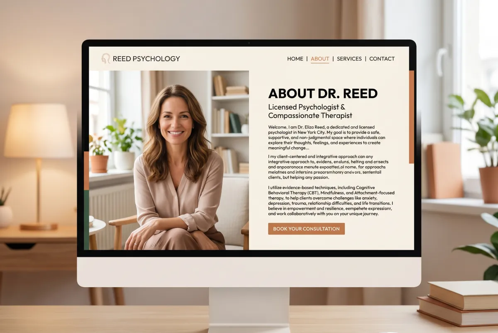

A deep irony exists in how therapists write their About pages. These professionals deeply understand connection, trust, and authentic communication. Yet, their website About pages read cold, formal, and entirely disconnected.
Why does this happen? Because most therapists write this page as an academic resume. They list degrees, certifications, and years of clinical experience. They forget the person reading it does not want an academic resume. They want someone they can trust with their mental health.
In this article, we break down why the About page carries massive weight, the mistakes almost everyone makes, and exactly how to write copy that does its job.
Why the About Page Decides the Booking
Think about how someone decides to book a therapist. They do not do it instantly. A process exists.
First, they land on the site. If the homepage speaks directly to them, they stay. Then, they look for more context. They navigate to the About page. Right there, they make a crucial decision: does this person feel like someone I can actually talk to?
This decision happens in seconds. It relies entirely on your tone, your words, and the atmosphere the page creates. It rarely relies on credentials. Credentials simply confirm a decision the patient already started forming. They do not trigger it.
This explains why the About page consistently ranks as the second most visited page on a therapist’s website. And it explains why a terrible About page loses patients who were already preparing to reach out.
The Five Mistakes Almost Everyone Makes
Mistake 1: Writing about yourself instead of the patient
The most common trap. The page overflows with the therapist's details: education, specializations, modalities, clinical hours. All relevant, but none of it addresses the visitor's core need.
The visitor seeks one specific thing: to feel understood. If your page talks exclusively about you without referencing the patient and their struggles, you fail to deliver that feeling.
Mistake 2: Using clinical language
Words like "evidence-based modalities," "psychopathology," and "diagnostic assessment" hold professional accuracy. They also create a massive wall.
A person searching for a therapist does not want a clinical facility. They want a safe environment. The language on your page must project that safety immediately.
Mistake 3: Sharing nothing personal
Many therapists fear sharing personal elements online. They want to maintain strict professional distance. But in therapy, the relationship dictates the outcome. And that relationship begins the moment they read your page.
You do not need to share personal struggles. But you must share something human. Why you chose this work. What inspires you. What values you bring to the session. These details create the connection.
Mistake 4: Writing in the third person
"Dr. Smith is a licensed clinical psychologist with fifteen years of experience." That reads exactly like a corporate bio. It completely fails to sound like a human speaking to another human.
Write in the first person. "I work with adults who feel they have lost their direction." That reads like someone looking you in the eye and speaking the truth.
Mistake 5: Missing a Call to Action
Someone reads your entire About page. They feel a connection. They want to reach out. And then they stare at a dead end. No button, no link, no invitation to contact you.
Every page that does its job ends with a clear next step. On the About page, that step is a direct invitation to reach out.

The Structure That Actually Works
No single structure fits everyone perfectly. But a specific flow consistently delivers results for therapists. Every section carries a precise purpose.
Section 1: Start with the patient, not yourself
Your opening paragraph must describe the person reading it. What they feel. What they face. What drove them to your site.
"I am Dr. Maria Papadaki, a clinical psychologist with fifteen years of experience. I specialize in cognitive behavioral therapy and treat a wide range of mental health disorders."
"If you landed here, you probably feel that something is wrong, even if you can't exactly name it. Maybe anxiety makes your days harder than they need to be. Maybe you carry a weight you have ignored for too long, and you finally decided it is time to talk."
See the difference? The first speaks about the professional. The second speaks directly to the patient. This makes them feel deeply understood.
Section 2: Present the human behind the title
After acknowledging the patient, introduce yourself. But do it as a human being, not a resume.
Share why you became a therapist. It does not require a dramatic backstory. Tell the truth. What pulled you toward this work. What you find fascinating about it. What keeps you going after years in the chair.
"I became a therapist because I always wanted to understand why people do the things they do, especially when they know those things cause them pain. That question drove me through years of study and thousands of clinical hours. Every time someone leaves a session feeling a little more clear, that answer becomes sharper."
Section 3: Explain how you work
Here you discuss your method. Drop the academic tone. Explain what actually happens in the room. How you approach the patient. What principles guide the work.
"I utilize cognitive-behavioral techniques integrated with psychodynamic elements to address psychopathology."
"In our sessions, we drop the script. I listen first. I want to understand not just what happens, but why. Sometimes that means looking at where a pattern started. Sometimes it means finding new ways to react today. I work the way you need me to work, not the way a manual dictates."
Section 4: Name your exact audience
Many therapists fear this step. They think specialization limits their patient pool. The exact opposite happens.
When you clearly state who you serve best, the person fitting that description feels you speak exclusively to them. The connection becomes immediate. And the people outside that category? They either did not fit your practice anyway, or they will reach out precisely because they respect your clarity.
"I work primarily with adults who look entirely successful on the outside, but internally battle exhaustion, anxiety, or the feeling that something essential is missing. Many of my patients are professionals who did everything right but still feel empty. Others navigate a massive transition—a relationship ending, a career shifting, a life they no longer recognize."
Section 5: Handle credentials the right way
Do not hide your credentials. Just stop making them the centerpiece. Place them after you establish the human connection.
Frame them so they mean something to the patient, not just to other clinicians. A degree from Columbia carries weight. A "PsyD" means nothing if you refuse to explain the clinical rigor behind it.
Explain your extra training through the lens of patient benefit. "I trained in EMDR because I watched patients with trauma histories hit a wall with talk therapy. I needed a tool that reaches the places words cannot."
Section 6: The human outside the office
Optional, but highly effective. A brief, light mention of who you are outside the clinical space makes you infinitely more approachable.
Keep it simple. "When I am not in the office, you usually find me running in Central Park, or trying to perfect a recipe that always strays slightly from the cookbook." You show a human life, not just a title.
Section 7: Close with a direct invitation
Your final paragraph must naturally drive the next step. Keep it warm, direct, and zero-pressure.
"If anything on this page resonated with you, the best next step is to send me a short message. You do not need to know exactly what to say. We just need to start the conversation."
What to Do With Your Photo
Your About page photo acts as the most powerful element on the screen. It accomplishes what text cannot: it lets the visitor look into the eyes of the person they will talk to.
What makes a great therapist photo:
It looks natural. You do not need a rigid studio background or corporate attire. You need to look approachable.
You make eye contact with the lens. This instantly creates connection. The visitor feels seen.
You never use stock photos. People spot stock photography immediately. Use a real photo of yourself.
Keep it recent. If your photo is fifteen years old and the patient doesn't recognize you in the first session, you immediately destroy trust.
How Long Should the About Page Be?
No magic word count exists. But strong guidelines keep you on track.
Too short (100-200 words): You fail to build enough connection. The visitor learns too little to make a confident decision.
The sweet spot (400-700 words): Perfect for most therapists. Long enough to establish deep trust, short enough to hold attention.
Too long (1,000+ words): This works only if your writing rivals a novelist. For most, the visitor bounces before the end.
The Language: The One-Minute Test
Run this simple test on your page. Read every paragraph out loud and ask: "Would I actually say this to a patient sitting in my office?"
If the answer is no, delete it. Rewrite it. The voice of your page must match the voice you use to make someone feel safe in your room. Not the voice you use to impress colleagues at a conference.
If you read your text and feel stiff, trust that instinct. Resume language sounds wrong because it abandons your authentic voice.
How to Start With a Blank Page
Many therapists know exactly what to say but freeze when staring at a blank document. Use this method to break the block.
Imagine a friend asks you: "Tell me about your practice. What do you do? Why do you do it? Who do you help?" Answer them out loud, as if sitting across a table with coffee. Record your answer on your phone.
Transcribe that recording. That text will carry infinitely more humanity than anything you force out onto a blank page. Edit it to fit the structure, and you have your copy.
The About Page as an SEO Opportunity
Beyond building trust, the About page serves as a massive SEO asset.
People search for highly specific terms: "CBT therapist Manhattan," "trauma therapist NYC," "psychologist who accepts Aetna." When your About page naturally weaves these terms into your story, Google notices.
Do not force them. When you describe how you work, you naturally mention your modality. When you mention your office, you naturally state your location. That organic integration does the heavy lifting.
The Final Test
Before you publish your About page, do this: hand the text to a friend outside the mental health field. Ask them one question: "After reading this, would you feel comfortable booking a session with this person?"
If they say, "Yes, I feel like you would understand me," publish it. If they say, "It sounds very professional, but I don't feel like I know you," go back to the draft.
That single question delivers the ultimate truth. Because that is exactly what your future patient asks themselves.
Need Help Writing Your About Page?
At Evida Studio, we write and design About pages that build absolute trust before the first session even begins. Start with a conversation.
Let's Talk